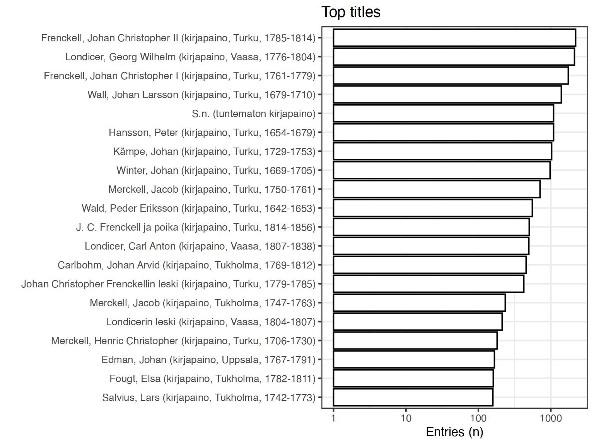

4 Corporate
- Unique accepted entries: 1415
- Unique discarded entries in original data (excluding NA cases): 0
- Original documents with non-NA titles: 21417 / 71919 (29.8%)
- Original documents with missing (NA) titles 50502 / 71919 documents (70.2%)
Top-20 titles and their title counts.

Frequency of unique titles: